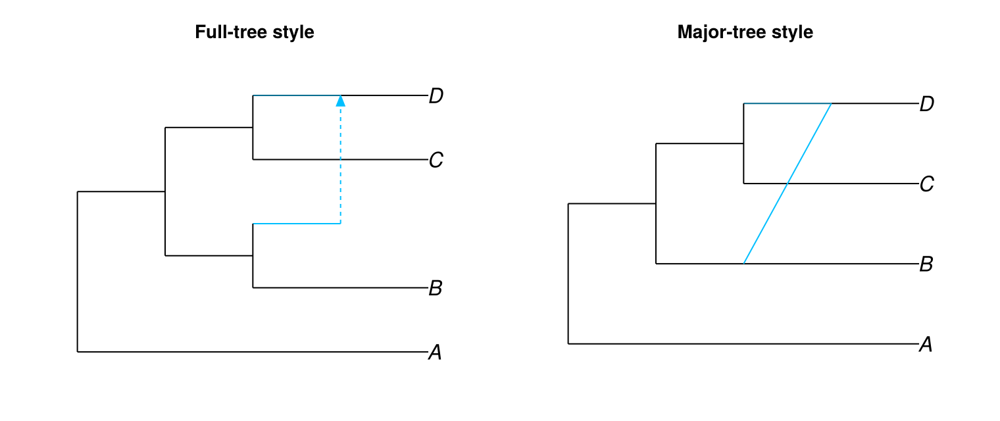
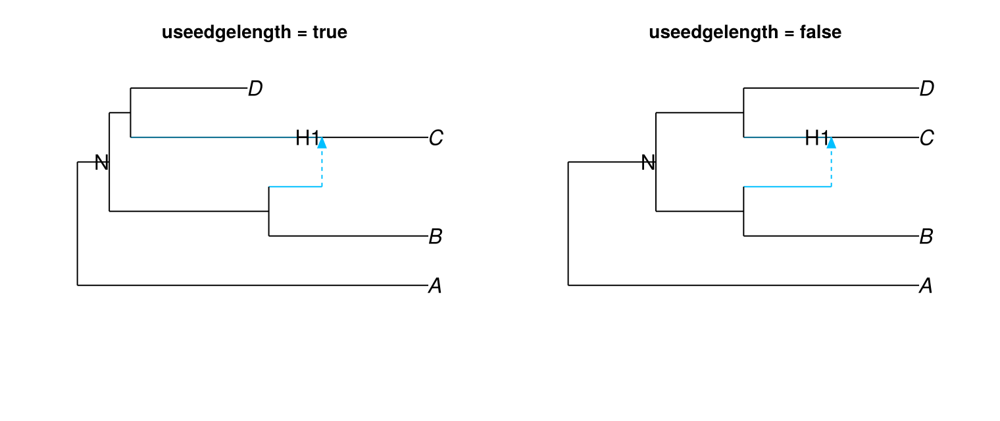
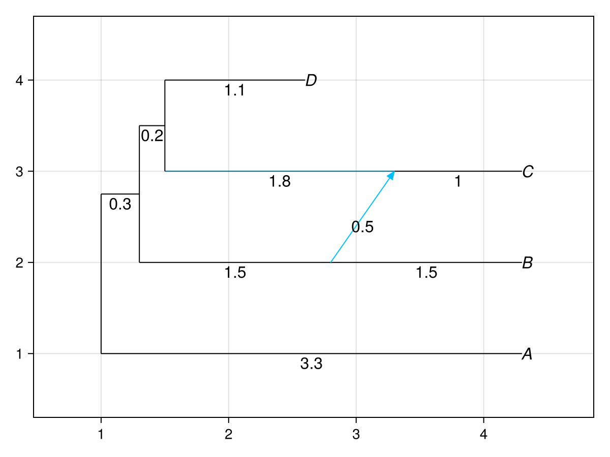
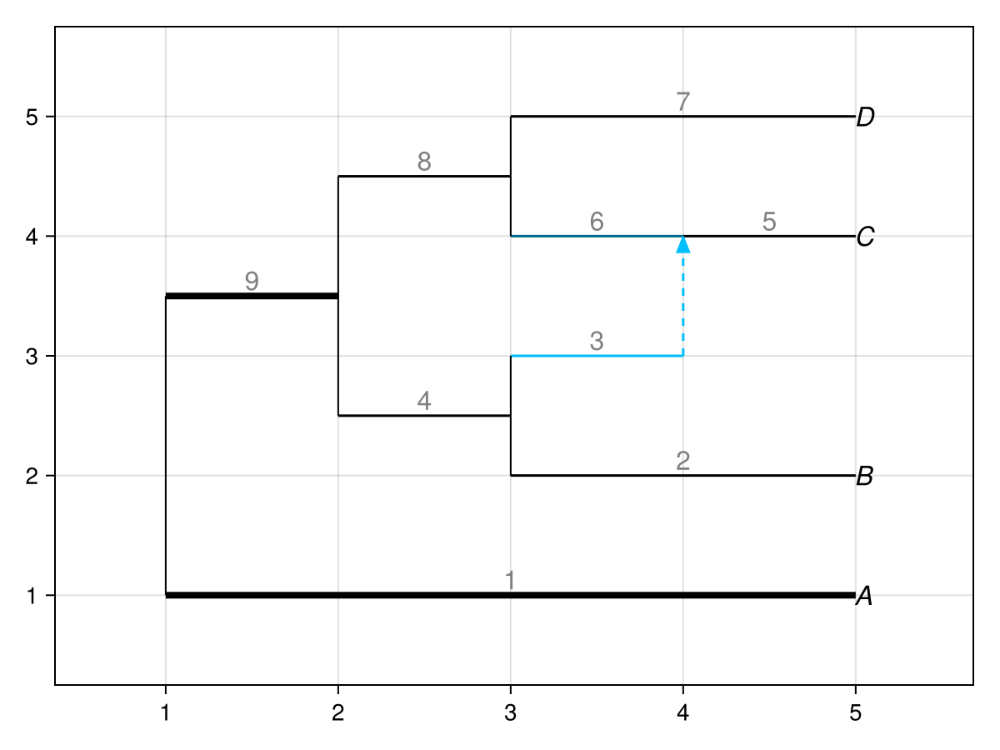
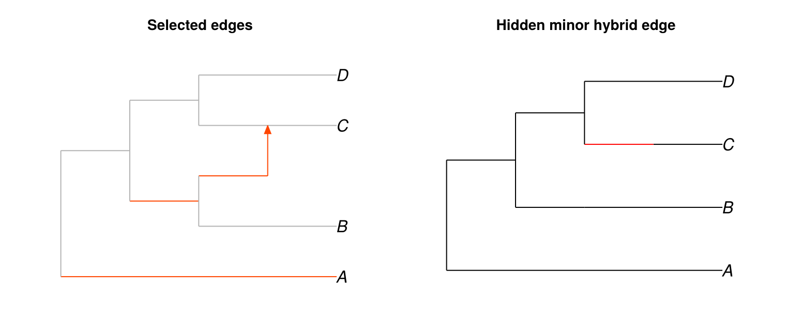
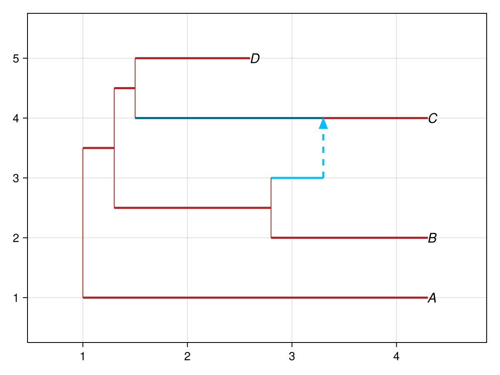

Better edges
PhyloMakie accepts plot attributes through the standard Makie keyword path. These attributes control layout style, edge lengths, colors, widths, labels, and limits.
Hybrid edge styles
The style attribute controls how minor hybrid edges appear. The full-tree style preserves the full network shape. The major-tree style draws minor hybrid edges as diagonal lines.
net = readnewick("(A,((B,#H1),(C,(D)#H1)));")
figure = Figure(size = (760, 320))
full_axis = Axis(figure[1, 1], title = "Full-tree style")
major_axis = Axis(figure[1, 2], title = "Major-tree style")
hidedecorations!(full_axis)
hidedecorations!(major_axis)
hidespines!(full_axis)
hidespines!(major_axis)
plot!(full_axis, net; style = :fulltree)
plot!(major_axis, net; style = :majortree)
figure
Edge lengths
Set useedgelength = true to use edge lengths on the x axis:
length_net = readnewick(
"(A:3.3,((B:1.5,#H1:0.5):1.5,((C:1)#H1:1.8,D:1.1):0.2):0.3);",
)
nodelabel = DataFrame(number = [-3, 3], label = ["N", "H1"])
figure = Figure(size = (760, 320))
length_axis = Axis(figure[1, 1], title = "useedgelength = true")
level_axis = Axis(figure[1, 2], title = "useedgelength = false")
hidedecorations!(length_axis)
hidedecorations!(level_axis)
hidespines!(length_axis)
hidespines!(level_axis)
plot!(
length_axis,
length_net;
useedgelength = true,
nodelabel = nodelabel,
ylim = (-1.0, 5.5),
)
plot!(
level_axis,
length_net;
useedgelength = false,
nodelabel = nodelabel,
ylim = (-1.0, 5.5),
)
figure
If edge lengths represent time, this view places earlier nodes farther from the tips. If edge lengths are not time-like, use style = :majortree or show edge length labels to make the encoded values explicit:
plot(
length_net;
useedgelength = true,
style = :majortree,
showedgelength = true,
showgamma = true,
arrowlen = 0.1,
)
Varying edge widths
edgewidth can be a number or a dictionary keyed by edge number:
widths = Dict(edge.number => 1.5 for edge in length_net.edge)
widths[1] = 4.0
widths[9] = 4.0
plot(length_net; edgewidth = widths, showedgenumber = true)
Customization
Use edgecolor to color selected edges and defaultedgecolor to set the fallback color for all other edges:
edgecolor = Dict(1 => "orangered", 3 => "orangered", 4 => "orangered")
figure = Figure(size = (760, 320))
color_axis = Axis(figure[1, 1], title = "Selected edges")
hidden_axis = Axis(figure[1, 2], title = "Hidden minor hybrid edge")
hidedecorations!(color_axis)
hidedecorations!(hidden_axis)
hidespines!(color_axis)
hidespines!(hidden_axis)
plot!(
color_axis,
length_net;
edgecolor = edgecolor,
defaultedgecolor = "grey70",
minorlinetype = "solid",
)
plot!(
hidden_axis,
length_net;
style = :majortree,
majorhybridedgecolor = "red",
minorlinetype = "blank",
)
figure
Live updates
Because the plot is a Makie plot object, update! changes supported attributes in place:
figaxisplot = plot(length_net; useedgelength = true)
update!(
figaxisplot.plot;
edgecolor = "firebrick",
edgewidth = 2.5,
showgamma = true,
)
figaxisplot.figure